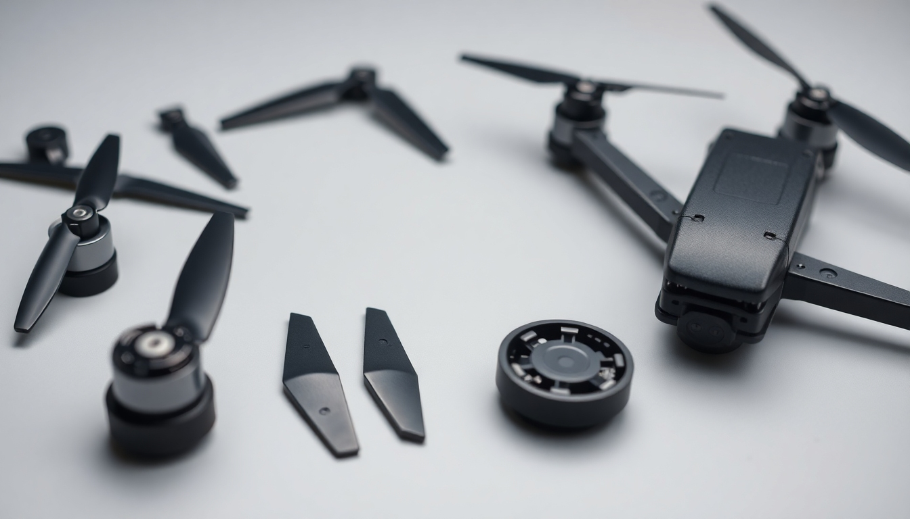

XD6 複合材料：重新定義無人機螺旋槳的飛行效率
華翔興業深知無人機螺旋槳（Propeller）是決定飛行性能的關鍵。我們提供的高性能 MXD6 尼龍複合材料，填補了普通尼龍與碳纖維之間的空白，為 FPV 穿越機、專業航拍機製造商提供了在「高剛性」、「低吸水率」與「耐衝擊」之間的完美平衡解決方案。
採用 MXD6 材料製造的高效能無人機螺旋槳與精密部件
防止氣動變形（High Modulus）
在高轉速飛行下，普通尼龍槳容易因離心力與風壓變形（Flutter）導致升力效率下降。MXD6 的高模量特性確保葉片在大推力下仍能保持精準幾何形狀，提供穩定且恆定的升力。
全天候尺寸穩定（Low Water Absorption）
普通 PA66 尼龍吸水後會變軟、變重，影響飛行手感。MXD6 具備極低吸水率，無論在乾燥沙漠或潮濕海邊，葉片重量與硬度始終如一，確保飛行控制精準度。
消除果凍效應（Vibration Damping）
相較於極硬的碳纖維容易傳導高頻震動，MXD6 聚合物基材具備優異阻尼特性，能有效吸收電機運轉震動，讓航拍畫面如絲般順滑（Jello-Free）。
耐炸機韌性（Impact Toughness）
純碳纖維槳雖然硬度高但極脆，碰撞即碎。MXD6+GF 複合材料在保持高硬度的同時兼具韌性，遭遇輕微撞擊時不易脆斷，降低耗材成本。
極致的動平衡（Precision Molding）
MXD6 優異的流動性使其注塑成型精度高，能完美複製模具細節。從槳根到槳尖密度均勻，出廠即具備極佳動平衡，減少電機軸承磨損。
輕量化與高效率
低密度配合高剛性結構設計，有效降低旋轉慣量（Rotational Inertia），使無人機加減速反應更靈敏，提升 FPV 競速操控極限。
材料性能對比：為什麼 MXD6 是最佳選擇？
| 特性指標 | 普通尼龍 (PA66+GF) | MXD6 複合材料 (MXD6+GF) | 純碳纖維 (Carbon Fiber) |
|---|---|---|---|
| 剛性 (硬度) | 普通（易變形） | 高（接近碳纖，抗變形） | 極高（最硬） |
| 吸水率 (受潮影響) | 高（受潮變軟/增重） | 極低（性能穩定） | 無（不受影響） |
| 耐摔性 (韌性) | 好（容易彎曲） | 中上（硬而有韌，不易斷） | 差（易脆斷，危險） |
| 航拍畫面穩定性 | 普通 | 優異（高阻尼，吸震強） | 較差（易產生高頻震動） |
| 推薦用途 | 練習機、玩具機 | 競速 FPV、專業航拍機 | 大型工業機、極限競速 |